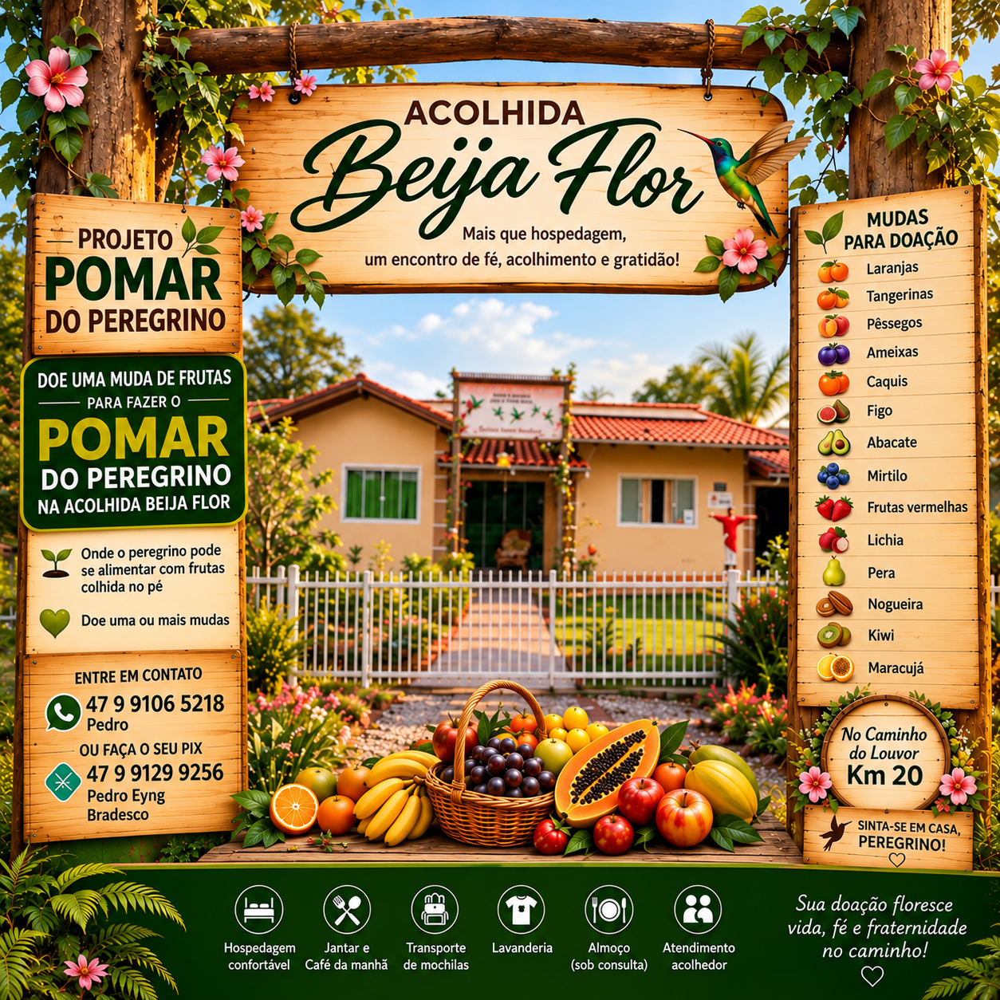

🔎 Encontre uma árvore pelo código
Viu uma placa no pomar? Digite o código para abrir diretamente a ficha da planta.
Não sabe o código? Pesquise pelo nome da planta no mapa interativo.
👣 Visitantes do nosso pomar digital
Carregando visitas…
Consultando o total de visitas registradas pelo GoatCounter.
O contador mostrará visualizações registradas, não necessariamente pessoas diferentes. Não exibimos dados pessoais dos visitantes.
🌱 Nossa história — a chegada das mudas
Antes de criar raízes no Pomar do Peregrino, as plantas passaram por uma etapa especial de preparação. Este registro mostra parte das mudas adquiridas, reunidas e identificadas para a implantação do projeto.

🌳 Veja onde está cada planta — e quem a doou
Explore o croqui digital completo, organizado pelas linhas e posições do terreno. Cada posição cadastrada apresenta o nome da planta e o doador registrado. Clique para conhecer a ficha individual.
🗺️ Abrir croqui com plantas e doadores
Base: croqui de 05/11/2026. A grade é esquemática; registros e doadores sujeitos a conferência.
🚶 Faça um passeio virtual
Em cinco etapas, conheça a Acolhida Beija-Flor, explore o croqui, descubra árvores e aprenda a consultar suas fichas.
Experiência digital guiada; não representa trajetos físicos ou imagens em 360°.

🌿 Acolhida Beija-Flor
Pomar do Peregrino • Caminho do Louvor • Ituporanga/SC
Mais que hospedagem: um encontro de fé, acolhimento e gratidão.
💚 Conheça a Acolhida Beija-Flor e o Pomar do Peregrino
Um projeto que une hospitalidade, fé, natureza e a generosidade de quem contribui com novas árvores.

.png)
🗺️ Mapa Interativo do Pomar
Encontre qualquer uma das 128 posições do croqui pelo código, nome da planta ou doador. Toque na árvore para consultar suas informações.
Mapa esquemático por linhas; as posições exatas no terreno ainda serão representadas.
Bem-vindo ao nosso pomar!
Aqui, cada árvore representa um gesto de amor à natureza, de generosidade, fé e esperança.
Um espaço de acolhimento, aprendizado e conexão com a vida, onde os peregrinos podem descansar e conhecer a natureza.
🌿 Catálogo Botânico Digital
O croqui atualizado em 5 de novembro de 2026 reúne 128 registros de localização de plantas. O catálogo será ampliado e revisado conforme a identificação e a situação de cada muda forem confirmadas.
As fichas individuais já permitem consultar os registros. Informações botânicas, fotografias verificadas e dados de floração e frutificação serão acrescentados gradualmente.
💚 Um legado de generosidade
Cada árvore também representa o carinho de pessoas, famílias e empresas que contribuíram para tornar este sonho realidade.
Pequenos gestos de hoje podem deixar grandes frutos para as futuras gerações.
🍊 Conheça nossas árvores
🌿 Abrir o Catálogo Botânico Digital
Descubra as espécies que fazem parte do Pomar do Peregrino.
🍊 Conheça a Laranjeira🌱 O nascimento do Pomar do Peregrino
Entre os dias 6 e 10 de outubro de 2026, um sonho começou a ganhar raízes na Acolhida Beija-Flor. Com o preparo do solo, a abertura e preparação das covas, a adubação e o plantio das mudas, nasceu um espaço pensado para acolher, ensinar e aproximar as pessoas da natureza.
Cada pequena árvore representa um compromisso com o futuro. Com o passar dos anos, o pomar poderá oferecer frutos, sombra, beleza e novas experiências aos peregrinos que percorrem o Caminho do Louvor.
Mais do que plantar árvores, estamos cultivando histórias, conhecimento e esperança.
As fotografias documentam o pomar com as mudas já plantadas. O dia exato de plantio de cada muda, dentro do período indicado, não foi registrado individualmente.
🌿 Como explorar o Pomar do Peregrino
Conheça as frutíferas e descubra as histórias de cada muda em três passos simples:
- Encontre uma árvore no croqui digital ou no catálogo botânico.
- Abra a ficha individual para conhecer o nome registrado, o doador e a posição no pomar.
- Explore outras espécies usando os links para a árvore anterior e a próxima árvore.
As mudas foram plantadas de 6 a 10 de outubro de 2026. A identificação botânica e as fotografias de referência seguem em conferência.
📸 Qualidade das fotografias do pomar
Estamos conferindo as imagens dos frutos, uma planta de cada vez. O painel de revisão permite consultar os registros por código ou nome e acompanhar quais fotografias precisam de confirmação.
🔎 Consultar a revisão das fotografias
As fotografias são referências botânicas. Plantio realizado de 6 a 10 de outubro de 2026; a identificação botânica e as fotografias de referência seguem em conferência.
📲 Compartilhe o Pomar do Peregrino
Convide familiares, amigos e peregrinos a conhecer o pomar, suas árvores e suas histórias.
📷 Instagram da Acolhida Beija-Flor
Perfil: @acolhidabeijaflor. No Instagram, adicione o endereço do pomar em Editar perfil → Links → Adicionar link externo.